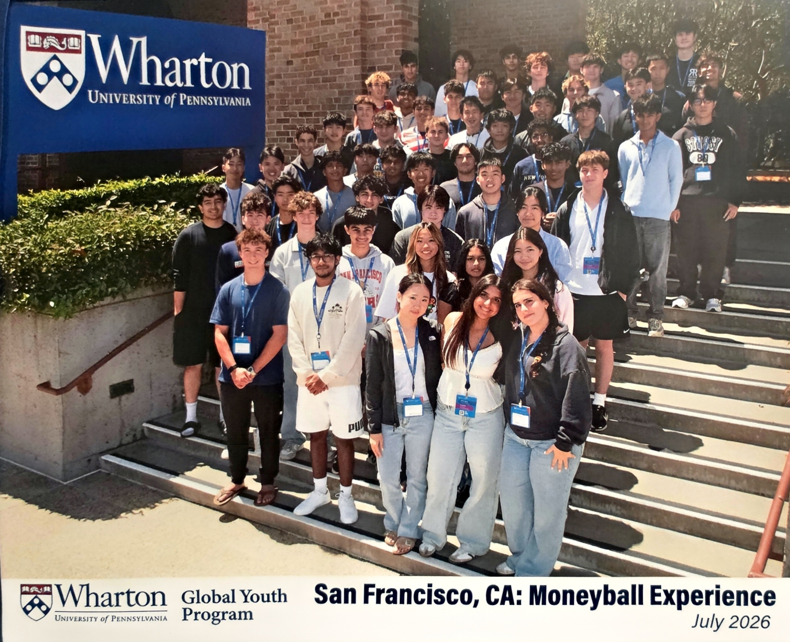
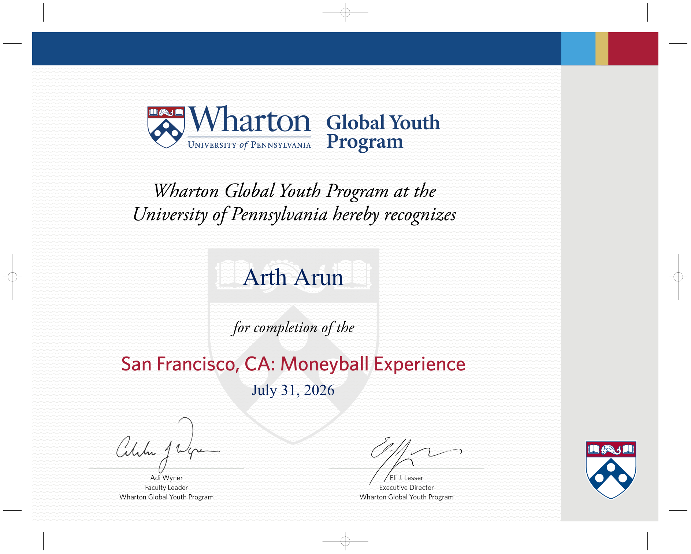

Wharton Moneyball Experience
Completed the Wharton Global Youth Program's Moneyball Experience, applying sports analytics to a team study of NBA offense.
Completed the Wharton Global Youth Program's Moneyball Experience, applying sports analytics to a team study of NBA offense.
The final presentation examines how shot creation and shot making relate to NBA offensive rating, using team-season data from 2015 through 2025. Arth contributed to the team presentation with Stephen Gao, Brandon Hsi, Joshua Edwards, and Wesley Lee.

